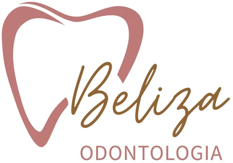
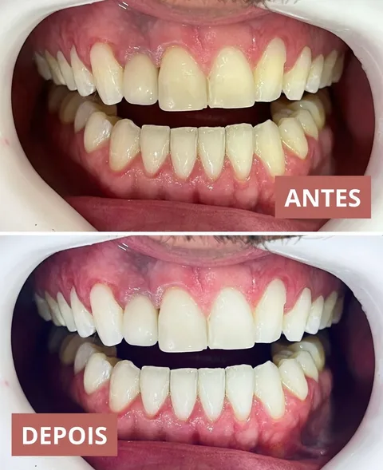
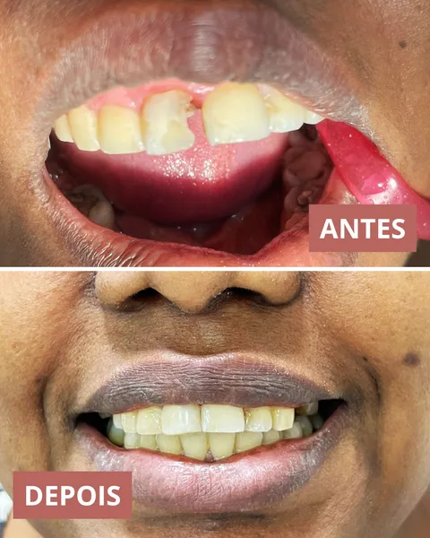
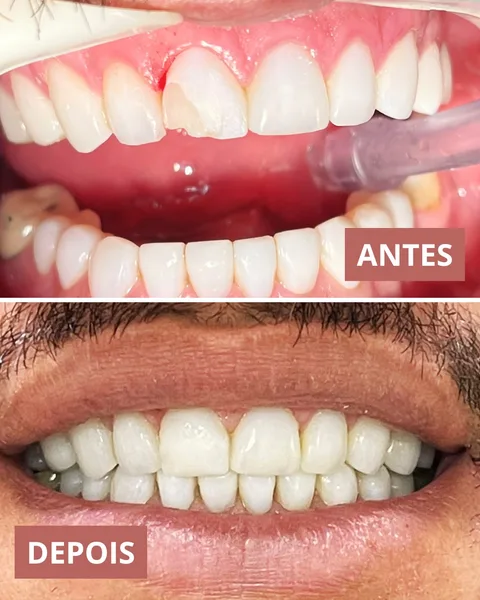
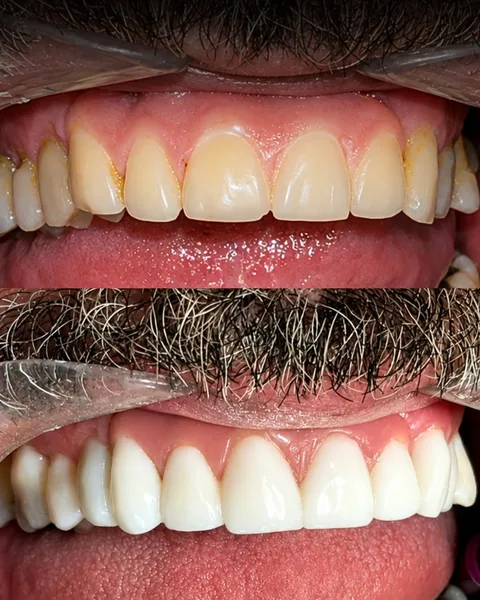
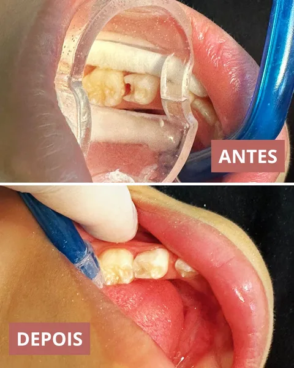

01
Implantes dentários
Uma possibilidade para repor dentes ausentes, conforme a avaliação de cada caso.
Beliza Odontologia
Cuidar do seu sorriso começa com uma conversa. Conte o que você precisa e dê o primeiro passo, no seu ritmo.
Agendar minha avaliaçãoUm primeiro passo para sorrir sem medo.
Cuidado para cada sorriso
Da prevenção aos cuidados com a estética, tudo começa com uma avaliação das suas necessidades.
Uma possibilidade para repor dentes ausentes, conforme a avaliação de cada caso.
Cuidados com o alinhamento dos dentes e a mordida, com planejamento individual.
Conheça as opções de clareamento e entenda qual cuidado é indicado para você.
Limpeza profissional e orientações para cuidar da saúde bucal no dia a dia.
Um primeiro contato com o dentista e cuidados com o sorriso das crianças.
Converse sobre facetas e lentes e descubra as indicações e limites para o seu caso.
Cada sorriso é único. A indicação de um tratamento depende da avaliação profissional.
Cuidado além do consultório
Um cuidado pensado para você começa com escuta, planejamento e orientação.
Uma avaliação é o começo para conversar sobre o que você precisa e espera do seu cuidado.
Conheça as possibilidades, as indicações e as etapas antes de decidir seu próximo passo.
Leve suas dúvidas sobre higiene e rotina para receber orientação profissional.
Converse sobre o acompanhamento indicado para você e os próximos cuidados.
Cada caso precisa de avaliação profissional. Resultados e necessidades de acompanhamento variam.
Por que a Beliza?
Seu medo, suas dúvidas e seus planos fazem parte dessa conversa. Você merece espaço para falar sobre eles.
Uma conversa sobre você e o que espera do seu tratamento.
Traga suas perguntas. Entender cada etapa ajuda a dar o próximo passo.
Converse sobre as possibilidades e decida com orientação profissional.
É mais simples do que parece
Envie uma mensagem e conte o que você precisa.
Combine com a equipe um dia e horário para a sua consulta.
Depois da avaliação, converse sobre as indicações para o seu sorriso.

Cuidado que começa
com uma conversa.
Prazer, Dra. Marcelle
A Beliza Odontologia é o consultório da Dra. Marcelle Beliza.
Na sua avaliação, conte sobre seu sorriso, suas dúvidas e o que gostaria de cuidar. Essa conversa é o começo para entender as possibilidades de tratamento.
Pode perguntar
Ter dúvidas é natural.
Estamos aqui para conversar.
Conte sobre esse medo ao agendar e na avaliação. Converse com a Dra. Marcelle sobre suas experiências, tire dúvidas e fale sobre o que ajuda você a se sentir mais à vontade.
A sensação varia conforme o procedimento e cada pessoa. Na avaliação, pergunte sobre os cuidados para o seu conforto e sobre o que esperar durante e depois do tratamento.
É um momento para conhecer a criança e conversar com quem cuida dela. Informe a idade e as necessidades ao agendar; a profissional poderá orientar sobre a primeira visita.
Consulte a equipe pelo WhatsApp para conhecer as formas de pagamento disponíveis. As condições do seu tratamento devem ser conversadas após a avaliação.
O tempo depende do tratamento indicado e das necessidades de cada caso. Depois da avaliação, você poderá conversar sobre as etapas e a previsão de acompanhamento.
Histórias de cuidado
Conheça alguns registros dos cuidados realizados pela Dra. Marcelle Beliza, compartilhados com autorização dos pacientes.
Cada caso é único. Os resultados variam de pessoa para pessoa e dependem de avaliação profissional.
Deslize as fotos para ver mais.





Venha nos conhecer
Horário de funcionamento
Segunda a sexta: 08:00–12:00 e 13:00–16:30.
Sábados: 08:00–12:00.
Beliza Odontologia
Shopping das Fábricas
Sala 18
Sua próxima visita
Av. Getúlio Vargas, 330 · Shopping das Fábricas, Sala 18